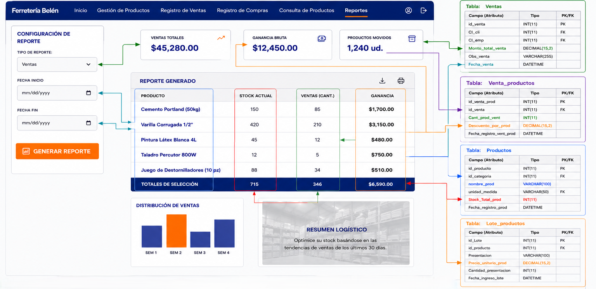

SISTEMA DE INFORMACIÓN WEB PARA LA GESTIÓNCONTROL DE INVENTARIO Y CONSULTAS DE PRODUCTOS DE CONSTRUCCIÓN DE LA FERRETERÍA BELÉN
Control de inventario, ventas en tiempo real, compras automatizadas y consultas inteligentes. Arquitectura robusta con metodologías ágiles.
Demo Interactivo · Punto de Venta e Inventario
Simulación en tiempo real: Filtra productos y realiza ventas para ver cómo se actualiza automáticamente el stock (RF-02).
Capítulo 1: Marco Introductorio
La transformación digital se ha convertido en un factor clave para mejorar la competitividad y eficiencia de las organizaciones, especialmente en pequeñas y medianas empresas dedicadas a actividades comerciales. En el sector ferretero, la gestión adecuada de inventarios, ventas y compras constituye un elemento fundamental para garantizar la disponibilidad de productos, optimizar recursos y brindar una atención eficiente a los clientes.
La Ferretería Belén desarrolla actividades relacionadas con la comercialización de materiales y productos para la construcción, manejando un amplio catálogo de artículos que requieren un control permanente de existencias, movimientos de inventario y registro de transacciones comerciales. Sin embargo, gran parte de estos procesos se realizan de forma manual mediante registros físicos y anotaciones tradicionales, lo que limita la capacidad de administrar la información de manera eficiente y oportuna.
Desde la perspectiva de la Ingeniería de Sistemas, la automatización de procesos mediante sistemas de información permite integrar datos, reducir errores operativos y proporcionar información confiable para la toma de decisiones. En este contexto, surge la necesidad de desarrollar un Sistema de Información Web para la Gestión, Control de Inventarios y Consultas de Productos de Construcción de la Ferretería Belén, orientado a optimizar los procesos administrativos y operativos mediante el uso de tecnologías web, bases de datos relacionales y mecanismos de control automatizado.
La implementación de esta solución tecnológica permitirá centralizar la información de productos, ventas, compras y consultas, facilitando el acceso en tiempo real a los datos del negocio y contribuyendo al fortalecimiento de la gestión organizacional de la empresa.
Actualmente, la Ferretería Belén presenta deficiencias en la gestión y control de su inventario debido a la utilización de procedimientos manuales para el registro de productos, ventas y compras. Esta situación genera dificultades para mantener información actualizada sobre la disponibilidad de productos, ocasionando inconsistencias en los registros, errores humanos frecuentes y retrasos en las operaciones diarias. La ausencia de un sistema integrado impide realizar un seguimiento preciso de las entradas y salidas de inventario, provocando pérdidas económicas derivadas de productos vencidos, dañados o extraviados. Asimismo, existe dificultad para identificar productos con alta demanda, productos de baja rotación y niveles críticos de stock, afectando directamente la planificación de compras y la reposición de mercancías.
Bajo este contexto, se formula la siguiente Pregunta Esencial desarrollada:
La presente investigación busca responder esta interrogante mediante el análisis, diseño y propuesta de una solución tecnológica que permita mejorar significativamente la gestión de inventarios, ventas, compras y consultas de productos dentro de la organización.
Desarrollar un sistema de información web para la gestión, control de inventarios y consulta de productos de construcción de la Ferretería Belén, mediante la integración de módulos de administración de productos, ventas, compras, reportes y consultas, con el propósito de automatizar los procesos operativos, garantizar la integridad de la información, optimizar el control del inventario y proporcionar soporte eficiente para la toma de decisiones administrativas.
- Implementar un módulo de gestión de productos que permita registrar, actualizar, eliminar y consultar información relacionada con productos de construcción, incluyendo categorías, proveedores, precios y niveles de stock.
- Desarrollar un módulo de gestión de ventas que registre transacciones comerciales en tiempo real, genere comprobantes y actualice automáticamente las existencias disponibles en el inventario.
- Diseñar e implementar un módulo de gestión de compras a proveedores que permita registrar adquisiciones de productos y sincronizar automáticamente la actualización del stock almacenado.
- Implementar un módulo de consulta de productos que facilite la búsqueda y visualización de información mediante filtros por nombre, categoría, disponibilidad y características del producto.
- Desarrollar un módulo de generación de reportes que permita obtener información consolidada sobre inventarios, ventas, compras y ganancias para apoyar los procesos de control y toma de decisiones.
- Implementar un mecanismo de autenticación y control de acceso basado en roles de usuario, garantizando la seguridad, confidencialidad e integridad de la información gestionada por el sistema.
- Diseñar una arquitectura cliente-servidor basada en tecnologías web y bases de datos relacionales que asegure la disponibilidad, escalabilidad y mantenibilidad de la aplicación.
- Automatizar los procesos de actualización de inventario mediante reglas de negocio que controlen las entradas y salidas de productos derivadas de compras y ventas realizadas en el sistema.
Capítulo 2: Marco Teórico
Un sistema de información web es una aplicación informática desarrollada para gestionar, procesar, almacenar y distribuir información mediante tecnologías web, permitiendo el acceso a los datos a través de navegadores y redes de comunicación. Su finalidad es automatizar procesos organizacionales, mejorar la eficiencia operativa y proporcionar información confiable para la toma de decisiones.
En el presente proyecto, el Sistema de Información Web para la Gestión, Control de Inventarios y Consultas de Productos de Construcción de la Ferretería Belén permitirá administrar productos, ventas, compras, consultas y reportes mediante una plataforma centralizada y accesible para los usuarios autorizados.
Voy a tomar como base la bibliográfica de Ian Sommerville en su obra "Ingeniería de Software" el presente proyecto se clasifica formalmente dentro de las categorías de aplicaciones interactivas basadas en transacciones o compras. La justificación es que según Sommerville, las aplicaciones interactivas basadas en transacciones son aquellos sistemas de software que se ejecutan en una computadora remota y los cuales los usuarios acceden desde sus propias terminales para interactuar con la base de datos centralizada.
El autor destaca que la función principal de estos sistemas es procesar las peticiones de los usuarios para actualizar la información de la base de datos o extraer datos de la misma, siendo algunos ejemplos las aplicaciones de gestión empresarial o comercios electrónicos.
Scrum es una metodología ágil utilizada para el desarrollo de software mediante procesos iterativos e incrementales. Su objetivo principal es entregar funcionalidades de valor en ciclos cortos denominados Sprints, permitiendo una rápida adaptación a cambios en los requerimientos.
Para el desarrollo del sistema de la Ferretería Belén, Scrum permitirá organizar el trabajo en módulos funcionales como gestión de productos, ventas, compras, consultas y reportes.
La Ingeniería de Requisitos es la disciplina encargada de identificar, analizar, documentar y validar las necesidades de los usuarios y de la organización. Constituye la base para el diseño y construcción de sistemas de software.
En el proyecto se identificaron requisitos funcionales relacionados con la gestión de productos, ventas, compras, consultas y generación de reportes, además de requisitos no funcionales asociados a seguridad, compatibilidad y rendimiento.
Los Diagramas de Casos de Uso forman parte del Lenguaje Unificado de Modelado (UML) y permiten representar gráficamente la interacción entre los actores y las funcionalidades del sistema.
En el sistema de la Ferretería Belén, los principales actores son el Administrador y el Cliente. Los casos de uso identificados incluyen iniciar sesión, gestionar productos, gestionar ventas, gestionar compras a proveedores, consultar productos y generar reportes.
El Modelo Entidad Relación (DER) es una técnica de modelado de datos utilizada para representar la estructura lógica de una base de datos mediante entidades, atributos y relaciones.
En el presente proyecto, el DER permite representar entidades como Productos, Ventas, Compras, Clientes, Proveedores, Usuarios y Empleados, definiendo las relaciones necesarias para garantizar la integridad y consistencia de la información almacenada en la base de datos.
- Inventario: Conjunto de productos almacenados disponibles para su comercialización.
- Stock: Cantidad existente de un producto dentro del inventario.
- Producto: Artículo de construcción comercializado por la Ferretería Belén.
- Proveedor: Empresa o persona encargada de suministrar productos a la ferretería.
- Venta: Transacción comercial mediante la cual se registra la salida de productos.
- Compra: Proceso de adquisición de productos provenientes de proveedores.
- Cliente: Persona que adquiere productos ofrecidos por la ferretería.
- Reporte: Documento generado por el sistema con información de inventario, ventas o ganancias.
- Categoría: Clasificación para organizar los productos dentro del sistema.
- RN-01. Todo producto registrado debe pertenecer a una categoría existente.
- RN-02. Todo producto debe estar asociado a un proveedor registrado en el sistema.
- RN-03. No se podrá realizar una venta si el stock disponible es menor a la cantidad solicitada.
- RN-04. Cada venta debe actualizar automáticamente el stock del producto.
- RN-05. Cada compra registrada debe incrementar automáticamente el inventario.
- RN-06. Solo los usuarios autenticados podrán acceder a las funcionalidades administrativas.
- RN-07. Los clientes únicamente podrán realizar consultas de productos y disponibilidad.
- RN-08. El sistema deberá registrar la fecha y hora de cada compra y venta realizada.
- RN-09. Todo reporte deberá generarse utilizando información almacenada en la base de datos.
- RN-10. Los productos con stock igual a cero serán considerados productos agotados.
Capítulo 3: Marco de Desarrollo
La especificación de requisitos permite identificar y documentar las necesidades del sistema, describiendo las funciones que deberá realizar y las condiciones de calidad que deberá cumplir. Estos requisitos sirven como base para el diseño, desarrollo y validación del sistema web de la ferretería “Belén”.
Los requisitos funcionales describen las funciones y procesos que el sistema debe ejecutar para satisfacer las necesidades del usuario. Estos requisitos definen las operaciones principales del sistema, como el registro de productos, control de ventas, consultas y generación de reportes.
| Código | Hallazgo (Dato) | Requisito Funcional Redactado | Clasificación | Prioridad MoSCoW |
|---|---|---|---|---|
| RF-01 | “El administrador necesita registrar rápidamente los productos de construcción para mantener actualizado el inventario”. | El sistema debe permitir registrar productos mediante formularios web para almacenar información de nombre, categoría, precio, stock y proveedor. | Gestión de inventario | M (Must) |
| RF-02 | “El encargado de ventas necesita actualizar automáticamente el stock después de cada venta”. | El sistema debe actualizar automáticamente el inventario cuando se registre una venta para mantener información correcta del stock disponible. | Control de inventario | M (Must) |
| RF-03 | “Los clientes quieren buscar productos de forma rápida por nombre o categoría”. | El sistema debe permitir buscar productos mediante filtros por nombre, categoría o disponibilidad para facilitar la consulta de productos. | Consulta y búsqueda | S (Should) |
| RF-04 | “El administrador desea generar reportes de ventas y ganancias mensuales”. | El sistema debe generar reportes de ventas e inventario utilizando la información almacenada en la base de datos para apoyar la toma de decisiones. | Reportes administrativos | S (Should) |
| RF-05 | “El administrador necesita registrar compras realizadas a proveedores”. | El sistema debe registrar compras a proveedores mediante formularios de adquisición para actualizar automáticamente el stock del inventario. | Gestión de compras | M (Must) |
Los requerimientos no funcionales describen las características de calidad y restricciones técnicas que debe cumplir el sistema. Estos requisitos garantizan aspectos como seguridad, compatibilidad, rendimiento y usabilidad, asegurando un funcionamiento eficiente y confiable del sistema web.
| Código | Hallazgo (Dato) | Requisito No Funcional Redactado | Tipo de Calidad | Prioridad MoSCoW |
|---|---|---|---|---|
| RNF-01 | “Los usuarios quieren que la información del sistema esté protegida contra accesos no autorizados”. | El acceso al sistema deberá estar protegido mediante autenticación de usuarios y contraseñas para garantizar la seguridad de la información. | Seguridad | M (Must) |
| RNF-02 | “El administrador necesita que el sistema funcione correctamente en computadoras y navegadores actuales”. | La interfaz del sistema deberá ser compatible con navegadores web modernos para garantizar accesibilidad y usabilidad. | Compatibilidad y usabilidad | S (Should) |
El Producto Mínimo Viable (MVP) del Sistema de Información Web para la Ferretería Belén estará conformado por los requisitos clasificados como Must Have:
- RF-01: Gestión de Productos.
- RF-02: Actualización automática de inventario por ventas.
- RF-05: Gestión de Compras a Proveedores.
Estas funcionalidades permiten administrar el inventario, registrar movimientos de entrada y salida de productos y mantener actualizado el stock en tiempo real, resolviendo el problema principal identificado en la organización.
Los requisitos RF-03 y RF-04 se consideran mejoras de segunda prioridad para versiones posteriores del sistema, ya que complementan la funcionalidad principal mediante consultas avanzadas y generación de reportes administrativos.
| Objetivo Específico | Requisito Funcional (RF) | Caso de Uso | Entidad del DER |
|---|---|---|---|
| Implementar un módulo de gestión de productos que permita almacenar y gestionar información detallada como nombre, categoría, precio, stock y proveedor. | RF-01: El sistema debe permitir registrar productos mediante formularios web para almacenar información de nombre, categoría, precio, stock y proveedor. | Gestión de Productos | Productos, Categorías, Proveedores, Lote_productos |
| Implementar un módulo de gestión de productos que permita almacenar y gestionar información detallada como nombre, categoría, precio, stock y proveedor. | RF-02: El sistema debe actualizar automáticamente el inventario cuando se registre una venta. | Gestión de Productos | Productos, Venta_productos |
| Diseñar una interfaz web accesible para los clientes, que permita visualizar de forma clara y ordenada los productos disponibles en venta. | RF-03: El sistema debe permitir buscar productos mediante filtros por nombre, categoría o disponibilidad. | Consulta de Productos | Productos, Categorías |
| Diseñar una interfaz web accesible para los clientes, que permita visualizar de forma clara y ordenada los productos disponibles en venta. | RF-03: El sistema debe permitir consultar productos disponibles en stock. | Consulta de Productos | Productos |
| Crear un módulo de control de ventas que registre las transacciones realizadas, incluyendo fecha, productos vendidos, cantidad y total de la venta. | RF-02: El sistema debe actualizar automáticamente el inventario cuando se registre una venta. | Gestión de Ventas | Ventas, Venta_productos, Productos, Clientes |
| Crear un módulo de control de ventas que registre las transacciones realizadas, incluyendo fecha, productos vendidos, cantidad y total de la venta. | RF-04: El sistema debe generar reportes de ventas e inventario utilizando la información almacenada en la base de datos. | Generación de Reportes | Ventas, Venta_productos, Productos |
| Diseñar un módulo de compras a proveedores que permita registrar adquisiciones y actualizar el stock. | RF-05: El sistema debe registrar compras a proveedores mediante formularios de adquisición para actualizar automáticamente el stock del inventario. | Gestión de Compra Proveedores | Compras, Compra_productos, Proveedores, Productos |
| Generar reportes automatizados de inventario, ventas y ganancias para apoyar la toma de decisiones. | RF-04: El sistema debe generar reportes de ventas, inventario y ganancias. | Generación de Reportes | Ventas, Compras, Productos, Compra_productos, Venta_productos |
| Implementar un sistema de autenticación y control de accesos mediante roles de usuario y validación de credenciales. | RF-06: El sistema debe permitir autenticación de usuarios y control de accesos según roles. | Iniciar Sesión | Usuarios, Empleados |
| Automatizar la actualización del stock de productos mediante procesos sincronizados de compras y ventas. | RF-02: El sistema debe actualizar automáticamente el stock tras ventas. RF-05: El sistema debe actualizar automáticamente el stock tras compras. |
Gestión de Ventas / Gestión de Compra Proveedores | Productos, Venta_productos, Compra_productos |
Diagrama de Casos de Uso General

Caso de Uso 1

Caso de Uso 2

Caso de Uso 3

Caso de Uso 4

Caso de Uso 5

Caso de Uso 6

Login

Gestión de Productos

Gestión de Ventas

Gestión Compras Proveedores

Consulta de Productos

Generación de Reportes

Diagrama de Secuencia General

| Elemento | Descripción |
|---|---|
| Caso de Uso | Registrar Venta |
| Actor Principal | Administrador |
| Objetivo | Registrar la venta de productos y actualizar automáticamente el inventario |
| Precondición | El administrador debe haber iniciado sesión en el sistema |
| Postcondición | La venta queda almacenada y el stock actualizado correctamente |
| Flujo principal |
|
El Diagrama Entidad-Relación representa la estructura lógica de la base de datos del Sistema de Información Web para la Ferretería Belén. El modelo está compuesto por las entidades Usuario, Cliente, Empleado, Proveedor, Categoría, Producto, Compra, DetalleCompra, Venta y DetalleVenta, las cuales permiten gestionar los procesos de inventario, compras y ventas.
Las relaciones establecidas garantizan la integridad referencial mediante claves primarias (PK) y claves foráneas (FK), permitiendo controlar adecuadamente los movimientos de productos y las operaciones comerciales realizadas dentro del sistema.
.jpg)
Tabla: Usuarios
| Nombre del Campo | Tipo | PK/FK |
|---|---|---|
| id_usuario | INT(11) | PK |
| CI_emp | INT(11) | FK |
| Nom_usu | VARCHAR(100) | |
| Contrasena_usu | VARCHAR(45) | |
| Ultimo_ingreso_usu | DATETIME |
Tabla: Clientes
| Nombre del Campo | Tipo | PK/FK |
|---|---|---|
| CI_cli | INT(11) | PK |
| Nombre_cli | VARCHAR(100) | |
| Apellidos_cli | VARCHAR(100) | |
| Num_contacto_cli | INT(11) | |
| Fecha_registro_cli | DATETIME |
Tabla: Empleados
| Nombre del Campo | Tipo | PK/FK |
|---|---|---|
| CI_emp | INT(11) | PK |
| Nombre_emp | VARCHAR(50) | |
| Paterno_emp | VARCHAR(50) | |
| Materno_emp | VARCHAR(50) | |
| Cargo_emp | VARCHAR(50) | |
| Ciudad_Dep_emp | VARCHAR(50) | FK |
| Zona_emp | VARCHAR(50) | |
| Calle_Av_emp | VARCHAR(50) | |
| Numero_exterior_emp | CHAR(10) | |
| Num_contacto_emp | INT(11) | |
| Correo_electronico_emp | VARCHAR(100) | |
| Fecha_inicio_emp | DATETIME | |
| Fecha_retiro_emp | DATETIME |
Tabla: ciudad_dep_emp
| Nombre del Campo | Tipo | PK/FK |
|---|---|---|
| id_Ciudad_Dep_emp | VARCHAR(50) | PK |
| nombre_Cie | VARCHAR(50) | |
| descripcion | VARCHAR(100) |
Tabla: Ventas
| Nombre del Campo | Tipo | PK/FK |
|---|---|---|
| id_venta | INT(11) | PK |
| CI_cli | INT(11) | FK |
| CI_emp | INT(11) | FK |
| Monto_total_venta | DECIMAL(15,2) | |
| Obs_venta | VARCHAR(255) | |
| Fecha_venta | DATETIME |
Tabla: Venta_productos
| Nombre del Campo | Tipo | PK/FK |
|---|---|---|
| id_venta_prod | INT(11) | PK |
| id_venta | INT(11) | FK |
| Cant_prod_vent | INT(11) | |
| Descuento_por_prod | DECIMAL(15,2) | |
| Fecha_registro_vent_prod | DATETIME |
Tabla: Compra_productos
| Nombre del Campo | Tipo | PK/FK |
|---|---|---|
| id_compra_prod | INT(11) | PK |
| id_Lote | INT(11) | FK |
| Cant_prod_comp | INT(11) | |
| Precio_unit_comp | DECIMAL(15,2) | |
| Fecha_registro_comp_prod | DATETIME |
Tabla: Compras
| Nombre del Campo | Tipo | PK/FK |
|---|---|---|
| id_compra | INT(11) | PK |
| id_proveedor | INT(11) | FK |
| Monto_total_compra | DECIMAL(15,2) | |
| Obs_compra | VARCHAR(255) | |
| Fecha_compra | DATETIME |
Tabla: Proveedores
| Nombre del Campo | Tipo | PK/FK |
|---|---|---|
| id_proveedor | INT(11) | PK |
| Razon_Social | VARCHAR(100) | |
| Nombre_encargado | VARCHAR(100) | |
| Paterno_encargado | VARCHAR(50) | |
| Materno_encargado | VARCHAR(50) | |
| Num_proveedor | INT(11) | |
| Num_contacto_prov | INT(11) | |
| Ciudad_Dep_prov | VARCHAR(50) | FK |
| Calle_Av_prov | VARCHAR(50) | |
| Numero_exterior_prov | CHAR(10) | |
| Correo_electronico_prov | VARCHAR(100) | |
| Fecha_registro_prov | DATETIME |
Tabla: ciudad_dep_prov
| Nombre del Campo | Tipo | PK/FK |
|---|---|---|
| id_Ciudad_Dep_prov | VARCHAR(50) | PK |
| nombre_Cip | VARCHAR(50) | |
| descripcion | VARCHAR(100) |
Tabla: Lote_productos
| Nombre del Campo | Tipo | PK/FK |
|---|---|---|
| id_Lote | INT(11) | PK |
| id_producto | INT(11) | FK |
| Presentacion | VARCHAR(100) | |
| Precio_unitario_prod | DECIMAL(15,2) | |
| Cantidad_presentacion | INT(11) | |
| Fecha_ingreso_lote | DATETIME |
Tabla: Productos
| Nombre del Campo | Tipo | PK/FK |
|---|---|---|
| id_producto | INT(11) | PK |
| id_categoria | INT(11) | FK |
| nombre_prod | VARCHAR(100) | |
| unidad_medida | VARCHAR(50) | FK |
| Stock_Total_prod | INT(11) | |
| Fecha_registro_prod | DATETIME | |
| Fecha_ultima_modificacion_prod | DATETIME |
Tabla: Categorias
| Nombre del Campo | Tipo | PK/FK |
|---|---|---|
| id_categoria | INT(11) | PK |
| Nombre_cat | VARCHAR(100) | |
| Descripcion_cat | VARCHAR(255) | |
| Estado_cat | CHAR(3) | |
| Fecha_registro_cat | DATETIME |
Tabla: Unidades_medida
| Nombre del Campo | Tipo | PK/FK |
|---|---|---|
| id_Unidad_medida | VARCHAR(50) | PK |
| Nombre | VARCHAR(50) | |
| Descripcion | VARCHAR(100) |
El diagrama de arquitectura en capas representa la estructura tecnológica del sistema web, mostrando cómo se distribuyen y relacionan sus componentes principales. Este modelo organiza el sistema en diferentes niveles, permitiendo separar responsabilidades y mejorar la administración del software.
Diagrama de Arquitectura en Capas 1

Diagrama de Arquitectura en Capas 2

Los wireframes representan el diseño preliminar de las interfaces del sistema web, mostrando la distribución de elementos visuales, botones, formularios y opciones de navegación que tendrá cada pantalla. Estos diseños permiten visualizar de manera anticipada la interacción entre el usuario y el sistema antes de iniciar el desarrollo de la interfaz definitiva.
Asimismo, los wireframes ayudan a identificar mejoras en la organización de la información, facilitando una experiencia de usuario más clara, intuitiva y accesible. Cada wireframe está relacionado con un caso de uso específico del sistema, permitiendo representar gráficamente las funcionalidades principales de cada módulo.
Wireframe 1: Login / Iniciar Sesión

Wireframe 2: Gestión de Productos

Wireframe 3: Gestión de Ventas

Wireframe 4: Gestión de Compras a Proveedores

Wireframe 5: Consulta de Productos

Wireframe 6: Reportes

Estudiante: Brayan Copajaña Cnaviri | Ingeniería de Sistemas
Universidad Privada Franz Tamayo | Proyecto de Curso - Gestión 2026